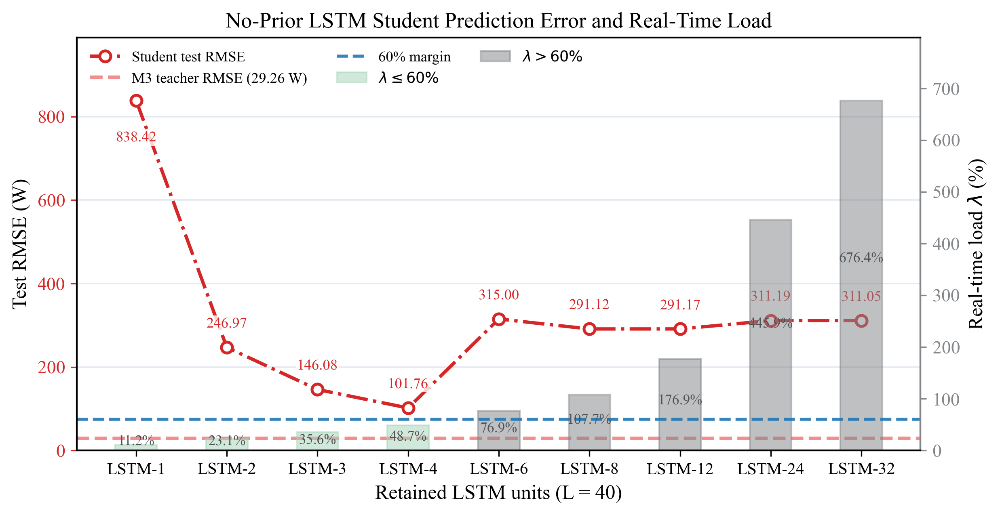
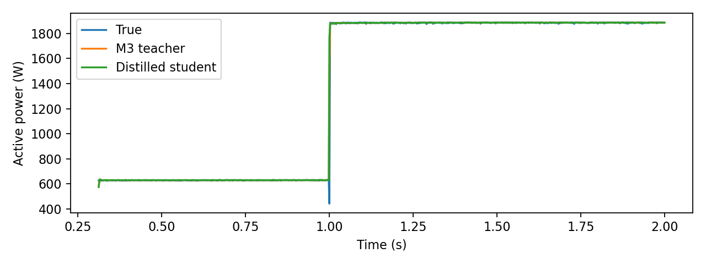
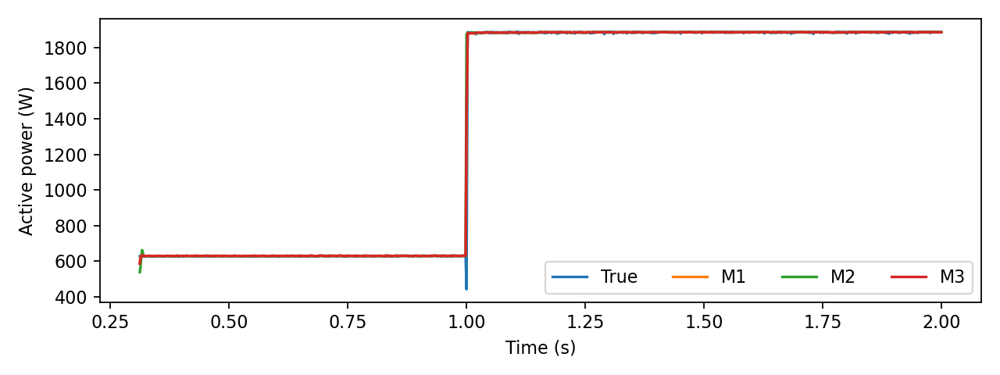
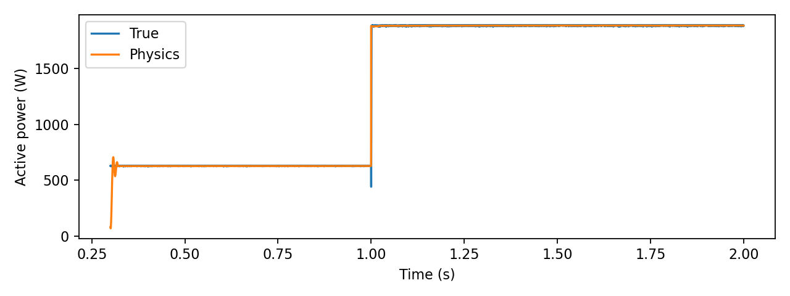

L=40 direct-output student audit
This page loads the recalculated distillation audit results and compares retained-LSTM student outputs with the M3 teacher, the measured active power trajectory, and the physics-prior reference.
Training trace
Selected case loss history
Error structure
Selected student-teacher residual
Original artifacts
Figures exported from the notebooks




Reproducibility
Notebook pipeline
- 01Prepare the measured active-power trajectories for evaluation.
- 02Generate the M3 teacher-model prediction on the retained test cases.
- 03Evaluate the L=40 retained-LSTM student configurations.
- 04Compare each student with measured P, the M3 teacher, and the reference prior.